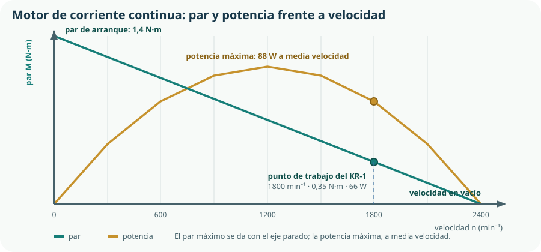

El Bloque C dejó el accionamiento calculado y montado; ahora hay que darle electricidad. Este tema recupera lo que traes de la ESO —tensión, intensidad, ley de Ohm— y lo lleva al nivel en que sirve para dimensionar: elegir una sección de cable, un fusible, una batería y un driver. Y termina con el motor de corriente continua, que es la máquina eléctrica que convierte todo esto en el movimiento del Tema 9.
- definir tensión, intensidad, resistencia, potencia y energía, y relacionarlas con sus unidades;
- aplicar la ley de Ohm y resolver asociaciones de resistencias en serie, paralelo y mixtas;
- plantear las leyes de Kirchhoff en un circuito de dos mallas;
- calcular un divisor de tensión y explicar por qué es la base de la lectura de un sensor;
- calcular la potencia disipada por efecto Joule y la caída de tensión en un cable, y dimensionar su sección;
- medir tensión, intensidad y resistencia con un polímetro sin destruirlo;
- explicar el funcionamiento de un motor de corriente continua e interpretar su curva par-velocidad;
- describir cómo se invierte el giro con un puente en H y cómo se regula la velocidad con PWM;
- dimensionar la alimentación de un sistema y elegir sus protecciones.
1. Las magnitudes eléctricas
| Magnitud | Qué mide | Símbolo | Unidad | Analogía con el agua |
|---|---|---|---|---|
| Tensión | Diferencia de potencial que empuja a las cargas. | V o U | voltio (V) | La presión entre dos puntos de la instalación. |
| Intensidad | Carga que atraviesa una sección por segundo. | I | amperio (A) | El caudal que pasa por la tubería. |
| Resistencia | Oposición al paso de la corriente. | R | ohmio (Ω) | El estrechamiento del tubo. |
| Potencia | Energía transferida por segundo. | P | vatio (W) | Presión por caudal. |
| Energía | Potencia por tiempo; lo que se paga en la factura. | E | julio (J) o kWh | El agua total consumida. |
P = V · I potencia en corriente continua
E = P · t 1 kWh = 3,6 · 10⁶ J
2. Ley de Ohm y resistencia
V = I · R la ley de Ohm, en sus tres formas: I = V/R y R = V/I
La resistencia de un conductor depende del material y de su geometría:
R = ρ · L / S ρ resistividad (Ω·mm²/m), L longitud (m), S sección (mm²)
| Material | ρ (Ω·mm²/m) | Uso |
|---|---|---|
| Plata | 0,016 | Contactos de calidad; demasiado cara para cableado. |
| Cobre | 0,017 | El conductor estándar de toda instalación. |
| Aluminio | 0,028 | Líneas de transporte: peor conductor, mucho más ligero y barato. |
| Hierro | 0,10 | Estructural, no conductor. |
| Nicromo | 1,10 | Resistencias calefactoras: interesa que disipe. |
3. Asociación de resistencias
Serie
Un solo camino. La misma intensidad por todos los elementos y la tensión se reparte. R = R₁ + R₂ + … La resistencia total es mayor que la mayor.
Paralelo
Varios caminos. La misma tensión en todos los elementos y la intensidad se reparte. 1/R = 1/R₁ + 1/R₂ + … La resistencia total es menor que la menor.
serie: Req = R1 + R2 · paralelo: Req = R1·R2 / (R1 + R2)
| Paso | Operación | Resultado |
|---|---|---|
| Paralelo R₂ ∥ R₃ | (60 · 40) / (60 + 40) | 24 Ω |
| Total en serie | 100 + 24 | 124 Ω |
| Intensidad total | 12 / 124 | 0,097 A = 97 mA |
| Tensión en R₁ | 0,097 · 100 | 9,7 V |
| Tensión en el paralelo | 12 − 9,7 | 2,3 V |
| Intensidad por R₂ | 2,3 / 60 | 0,038 A |
| Intensidad por R₃ | 2,3 / 40 | 0,058 A |
| Comprobación | 0,038 + 0,058 | 0,096 ≈ 0,097 A ✓ |
4. Las leyes de Kirchhoff
Con serie y paralelo se resuelven muchos circuitos, pero no todos. Las leyes de Kirchhoff son generales y no son más que la conservación de la carga y de la energía aplicadas a un circuito.
Σ Ientran = Σ Isalen primera ley, en cada nudo: la carga no se acumula
Σ V = 0 segunda ley, en cada malla: recorriéndola entera se vuelve al mismo potencial
5. Divisores de tensión y de intensidad
El divisor de tensión es, con diferencia, el circuito más útil de todo el curso: es la manera de convertir la resistencia de un sensor en una tensión que la placa pueda leer.
V2 = V · R2 / (R1 + R2) tensión en R₂ de dos resistencias en serie
| Estado del sustrato | R sonda | Cálculo | V que lee la placa |
|---|---|---|---|
| Seco | 30 kΩ | 3,3 · 10 / (30 + 10) | 0,83 V |
| Medio | 10 kΩ | 3,3 · 10 / (10 + 10) | 1,65 V |
| Saturado | 3 kΩ | 3,3 · 10 / (3 + 10) | 2,54 V |
El divisor de intensidad es el caso simétrico: en dos ramas en paralelo, la corriente se reparte en proporción inversa a las resistencias.
I1 = I · R2 / (R1 + R2) por la rama de menos resistencia pasa más corriente
6. Efecto Joule y dimensionado del cableado
Toda corriente que atraviesa una resistencia disipa energía en forma de calor. Es el efecto Joule, y según el caso es el objetivo del circuito o su principal problema.
P = I² · R potencia disipada; crece con el cuadrado de la corriente
Cálculo de la sección del cable del KR-1
El panel solar está a 15 m de la caja y hay que llevar 12 V con una corriente máxima de 1,5 A. La línea son dos conductores, de ida y de vuelta, así que la longitud total es 30 m. Se admite una caída de tensión del 3 %, es decir 0,36 V.
| Paso | Operación | Resultado |
|---|---|---|
| Caída admisible | 3 % de 12 V | 0,36 V |
| Resistencia máxima de la línea | 0,36 / 1,5 | 0,24 Ω |
| Sección mínima | S = ρ·L/R = 0,017 · 30 / 0,24 | 2,1 mm² |
| Sección comercial | Siguiente valor normalizado | 2,5 mm² |
| Comprobación con 2,5 mm² | R = 0,017·30/2,5 = 0,204 Ω; ΔV = 0,31 V | 2,6 % ✓ |
| Pérdida por Joule | P = 1,5² · 0,204 | 0,46 W |
7. Medir con el polímetro
El polímetro es el instrumento del bloque. Medir bien con él exige entender una sola idea: cada magnitud se mide de una manera distinta, y equivocarse en eso destruye el aparato o el circuito.
| Magnitud | Cómo se conecta | Resistencia interna | Error típico |
|---|---|---|---|
| Tensión | En paralelo con el elemento, sin abrir el circuito. | Muy alta: apenas desvía corriente. | Olvidar que se mide entre dos puntos. |
| Intensidad | En serie: hay que abrir el circuito e intercalarlo. | Casi nula: es casi un cable. | Conectarlo en paralelo: cortocircuito inmediato. |
| Resistencia | Con el componente desconectado y el circuito sin tensión. | Inyecta una pequeña corriente propia. | Medir con el circuito alimentado: lectura falsa o avería. |
| Continuidad | Como la resistencia, con aviso acústico. | — | Comprobar un cable sin desconectarlo. |
8. El motor de corriente continua
Una máquina eléctrica convierte energía eléctrica en mecánica —motor— o al revés —generador—. Y el motor de corriente continua tiene una propiedad que lo hace inmejorable para este curso: es reversible. Si lo haces girar con la mano, produce tensión. Si le das tensión, gira.
Un conductor por el que circula corriente dentro de un campo magnético experimenta una fuerza. Esa es toda la física del motor.
Crea el campo magnético, con imanes permanentes en los motores pequeños o con bobinas en los grandes.
Las bobinas que reciben la corriente y sobre las que aparece la fuerza que produce el par.
Invierten la corriente en el inducido cada media vuelta para que el par siempre empuje en el mismo sentido. Son la pieza que se desgasta y limita la vida del motor.
Al girar, el motor genera una tensión opuesta a la que se le aplica. Es la clave de todo lo que viene a continuación.

9. Invertir el giro y regular la velocidad
El KR-1 necesita abrir y cerrar la válvula, y hacerlo sin golpes. Eso significa invertir el sentido de giro y regular la velocidad, y las dos cosas se resuelven con soluciones normalizadas.
El puente en H
Invertir el giro de un motor de continua es invertir la polaridad de su alimentación. Un puente en H son cuatro interruptores electrónicos dispuestos de modo que, activando una diagonal o la otra, la corriente atraviesa el motor en un sentido o en el contrario. Se compra como circuito integrado y se gobierna con dos o tres señales de la placa.
| Diagonal activa | Efecto | En el KR-1 |
|---|---|---|
| Una diagonal | Gira en un sentido. | Abre la válvula. |
| La otra diagonal | Gira en sentido contrario. | Cierra la válvula. |
| Ninguna | Motor libre: se para por rozamiento. | Reposo. |
| Los dos de abajo | Frenado: el motor se cortocircuita sobre sí mismo. | Parada rápida al llegar al tope. |
Modulación de ancho de pulso (PWM)
Regular la velocidad bajando la tensión con una resistencia funciona, y es una idea pésima: toda la diferencia se convierte en calor por efecto Joule. La solución moderna es conmutar: encender y apagar la alimentación muy rápido y variar la proporción de tiempo encendido, el ciclo de trabajo.
Vmedia = V · D D es el ciclo de trabajo, de 0 a 1
10. Alimentación y protecciones
Un sistema real necesita decidir de dónde viene la energía, cómo se reparte y qué pasa cuando algo va mal.
| Elemento | Tensión | Corriente | Tiempo diario | Energía |
|---|---|---|---|---|
| Placa en reposo | 3,3 V | 28 mA | 23,5 h | 2,2 Wh |
| Placa con Wi-Fi activo | 3,3 V | 180 mA | 0,5 h | 0,3 Wh |
| Electroválvula abierta | 12 V | 310 mA | 0,4 h | 1,5 Wh |
| Sonda | 3,3 V | 5 mA | 0,2 h | 0,003 Wh |
| Total diario | — | — | — | ≈ 4,0 Wh |
| Elemento | Protege de | Cómo se dimensiona |
|---|---|---|
| Fusible | Sobrecorriente y cortocircuito. | Por encima de la corriente máxima normal y por debajo de lo que aguanta el cable. |
| Diodo en serie o puente | Inversión de polaridad al conectar. | Por corriente máxima; cuesta una pequeña caída de tensión. |
| Diodo de protección | La sobretensión al cortar una bobina. | En paralelo con el actuador; se estudia en el Tema 11. |
| Regulador de tensión | Alimentar a 3,3 V desde los 12 V de la batería. | Por corriente y por calor que debe disipar. |
| Masa común | Referencias distintas entre etapas. | No es un componente: es una regla de montaje. |
Comprueba lo que has aprendido
Este tema se demuestra con un circuito calculado, montado y medido, y con los tres valores coincidiendo dentro de un margen que sepas explicar.
| Aspecto | Qué debes demostrar | Evidencias posibles |
|---|---|---|
| Calcular | Que resuelves circuitos mixtos y aplicas Kirchhoff cuando hace falta. | Circuito de dos mallas resuelto con comprobación por dos caminos. |
| Dimensionar | Que eliges sección de cable, fusible y fuente con criterios y valores comerciales. | Cálculo de caída de tensión, sección normalizada elegida y balance energético diario. |
| Simular y montar | Que compruebas en simulador antes de montar y que el montaje real coincide. | Captura del simulador, montaje en placa de pruebas y tabla calculado-simulado-medido. |
| Medir | Que usas el polímetro correctamente en las tres funciones. | Acta de medidas con escala usada en cada una y el circuito abierto para medir corriente. |
| Motor | Que interpretas su curva y prevés la corriente de arranque. | Punto de trabajo situado en la curva, corriente de arranque medida y protección dimensionada a partir de ella. |
Medida reveladora: conecta el motor con un amperímetro en serie y bloquéale el eje un segundo con cuidado. Verás la corriente de arranque real, y entenderás de golpe por qué el fusible y el diodo no son adornos.
Glosario del tema
- Caída de tensión
- Tensión que se pierde en un conductor por su propia resistencia.
- Ciclo de trabajo
- Fracción del periodo durante la cual una señal conmutada está activa; fija el valor medio.
- Colector y escobillas
- Conjunto que invierte la corriente en el inducido de un motor de continua para mantener el sentido del par.
- Corriente de rotor bloqueado
- Corriente que consume un motor con el eje parado; puede ser diez veces la nominal.
- Divisor de tensión
- Dos resistencias en serie cuyo punto intermedio entrega una fracción de la tensión de alimentación.
- Efecto Joule
- Disipación de energía en forma de calor al circular corriente por una resistencia.
- Fuerza contraelectromotriz
- Tensión que genera un motor al girar, opuesta a la aplicada; limita la corriente consumida.
- Fusible
- Elemento que se funde al superarse una corriente, interrumpiendo el circuito.
- Intensidad
- Carga eléctrica que atraviesa una sección por unidad de tiempo.
- Leyes de Kirchhoff
- Conservación de la carga en cada nudo y de la energía en cada malla de un circuito.
- Masa
- Punto de referencia común respecto al que se miden las tensiones de un circuito.
- Máquina eléctrica
- Dispositivo que convierte energía eléctrica en mecánica o al revés.
- Polímetro
- Instrumento que mide tensión, intensidad, resistencia y continuidad.
- Puente en H
- Conjunto de cuatro interruptores electrónicos que permite invertir la polaridad aplicada a un motor.
- PWM
- Modulación de ancho de pulso: regulación del valor medio conmutando la alimentación a alta frecuencia.
- Resistividad
- Propiedad del material que, junto con la longitud y la sección, determina la resistencia de un conductor.
- Tensión
- Diferencia de potencial eléctrico entre dos puntos.
Resumen esencial
- La tensión se mide siempre entre dos puntos; decir «hay 5 V en este punto» supone una referencia que hay que declarar.
- La ley de Ohm relaciona tensión, intensidad y resistencia; la resistencia de un conductor depende del material, la longitud y la sección.
- En serie la intensidad es común y la tensión se reparte; en paralelo, al revés. Comprobar por dos caminos detecta los errores.
- Las leyes de Kirchhoff son la conservación de la carga en cada nudo y de la energía en cada malla.
- El divisor de tensión convierte la resistencia de un sensor en una tensión legible; la resistencia fija se elige del orden de la del sensor.
- La potencia disipada crece con el cuadrado de la corriente: duplicarla cuadruplica el calor.
- Un cable se dimensiona por caída de tensión y por calentamiento, y manda el criterio más exigente; la protección protege al cable.
- El polímetro mide tensión en paralelo, intensidad en serie abriendo el circuito y resistencia con el circuito sin tensión.
- El motor de corriente continua es reversible y su par es máximo con el eje parado, cuando la corriente también es máxima.
- La corriente de arranque puede ser diez veces la nominal porque aún no hay fuerza contraelectromotriz; un motor bloqueado se quema.
- El puente en H invierte el giro activando una diagonal u otra, y activar las dos ramas del mismo lado destruye el integrado.
- El PWM regula la velocidad sin disipar calor porque el interruptor nunca tiene a la vez tensión y corriente apreciables.
- El consumo diario lo domina lo que está encendido siempre, no lo que consume mucho durante poco tiempo.
- Masa, alimentación y señal son cosas distintas, y dos circuitos que se comunican deben compartir la masa.
Fuentes y recursos fiables
- [1] Tinkercad Circuits. Montaje y simulación de circuitos de corriente continua con polímetro virtual.
- [2] Simulador de circuitos de Falstad (en inglés). Visualización del flujo de corriente en tiempo real.
- [3] Centro Español de Metrología. Unidades eléctricas del Sistema Internacional y trazabilidad de la medida.
- [4] UNE — Asociación Española de Normalización. Secciones normalizadas de conductores y grados de protección (UNE-EN 60529).
- [5] INSST. Riesgo eléctrico y trabajo con instalaciones de baja tensión.
- [6] Decreto 64/2022, de 20 de julio (BOCM). Currículo de Tecnología e Ingeniería I, bloque D y criterio 4.2.